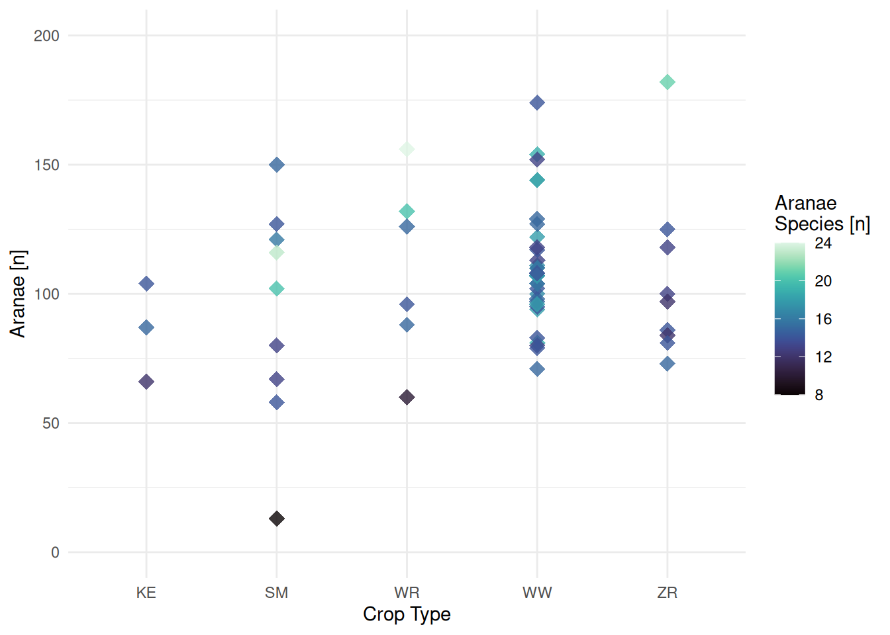

4 The Aasee Dataset
To learn the basics about data types, data handling and the fundamentals of R, we will work with a dataset from the Aasee in Muenster: Inform yourself real quick here about the origin of the dataset. You can download it here: https://github.com/od-ms/aasee-monitoring
Here is an excerpt of the data:
| Datum | Wassertemperatur | pH.Wert | Sauerstoffgehalt |
|---|---|---|---|
| 2021-05-31 23:57 | 17.98 | 8.05 | 10.53 |
| 2021-06-01 00:09 | 17.66 | 8.04 | 9.64 |
| 2021-06-01 00:19 | 18.03 | 8.12 | 11.30 |
| 2021-06-01 00:27 | 18.08 | 8.14 | 11.32 |
| 2021-06-01 00:39 | 18.06 | 8.12 | 11.06 |
| 2021-06-01 00:49 | 18.01 | 8.10 | 10.91 |
| 2021-06-01 00:59 | 18.02 | 8.10 | 10.96 |
| 2021-06-01 01:08 | 18.06 | 8.10 | 10.83 |
| 2021-06-01 01:19 | 18.08 | 8.10 | 10.82 |
| 2021-06-01 01:29 | 18.08 | 8.10 | 10.62 |
As a first intermediate goal we want to deal with the following task. We will learn all the necessary skills in R and a bit of statistics in the next lessons, but it is valuable to think about the task / question beforehand!
Compare the water temperature of 2021 June 02 and July 21.
- What does this task actually mean?
- Reformulate it as a question
- Outline steps to answer the question
4.1 Solution
Click for Answer
# load needed packages
library(stringr)
# data input
june = read.csv("data/2021-06_aasee.csv")
july = read.csv("data/2021-07_aasee.csv")
# actual processing ----
# get the day information from the Datum string
june$day = str_sub(june$Datum, start = 6, end = 10)
july$day = str_sub(july$Datum, start = 6, end = 10)
# reduce data to the needed days
june = june[june$day == "06-02",]
july = july[july$day == "07-21",]
mean(june$Wassertemperatur)## [1] 19.50693mean(july$Wassertemperatur)## [1] 22.09403# visual comparison
aasee = rbind(june, july)
boxplot(aasee$Wassertemperatur ~ aasee$day)
What are the flaws of this code?
If we want a different month or day we have to make changes in the code. As an R beginner, this is not something you should worry about to much - better spend your time to figure out what the R functions do and get the job done. Later on in your R journey this is something you should keep in mind and write more generalized code by writing your own R functions.
Side Note: Creating R functions
aasee_daily_mean = function(data, day){
data$day = str_sub(data$Datum, start = 6, end = 10)
data = data[data$day == day,]
result = mean(data$Wassertemperatur)
return(result)
}
july = read.csv("data/2021-07_aasee.csv")
aasee_daily_mean(july, "07-17")## [1] 21.54029